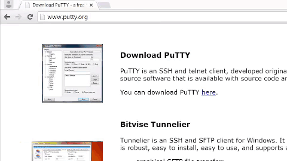

Shell Access - Windows

If you need to configure your IoT board, you will need to remotely connect to the Intel® Edison or Intel® Galileo. Once connected to your Intel® IoT board, you have access to the Linux-based Yocto operating system running on the board.
You can then execute special Linux commands such: changing the hostname and password, setting up Wi-Fi, or flashing new firmware.
Table of contents
Download a terminal client (PuTTY)
Windows does not come with a built-in terminal emulator so download and use the PuTTY client. View detailed instructions »

Identify the serial COM port
Use Device Manager to find the COM port number for the “USB Serial Port” connection. You will need the COM # to configure PuTTY in Establish a serial connection. View detailed instructions »

Establish a serial connection
Use PuTTY to establish a serial connection to the IoT board using the COM # you noted in the previous Identify the serial COM port section and the baud rate 115200. View detailed instructions »

You are now logged into your IoT board and can run shell commands. For example, to output the version number of the firmware running on your board:
cat /etc/version

The firmware version is in YYYYMMDDHHMM format so, in this case, Sept 3, 2014.
Additional resources
For more info on using PuTTY such as saving profiles, read Using PuTTY »
Next Steps
Some Edison boards have older firmware images on them. You may need to update the firmware to a newer version to get access to important features.